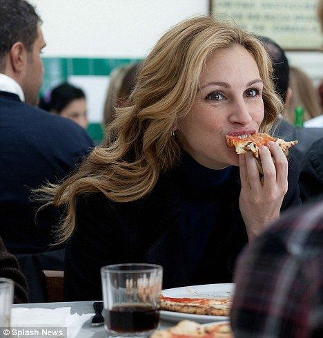

Pizza Napolitana
De la película: Come, reza, ama (2010)


Video de preparación
La escena icónica
En una de las escenas más memorables de "Come, reza, ama", la protagonista Elizabeth Gilbert (interpretada por Julia Roberts) disfruta de una auténtica pizza napolitana en la famosa pizzería Da Michele en Nápoles. Mientras saborea cada bocado, pronuncia las palabras que se han convertido en un mantra para los amantes de la comida: "Estoy teniendo una relación con mi pizza".
Esta escena captura la experiencia transcendental de disfrutar la comida italiana auténtica y ha inspirado a muchos espectadores a buscar su propia experiencia gastronómica napolitana.
Tiempo de preparación: 3 horas |
Tiempo de cocción: 90 segundos |
Dificultad: Media |
Porciones: 4
Ingredientes
Para la masa:
- Harina de trigo 00 500g
- Agua 325ml
- Sal 10g
- Levadura fresca 3g
Para la salsa:
- Tomates San Marzano pelados 400g
- Sal marina al gusto
- Aceite de oliva virgen extra 2 cucharadas
Para la cobertura:
- Mozzarella de búfala 250g
- Hojas de albahaca fresca unas cuantas
- Aceite de oliva virgen extra un chorrito
Preparación
Para la masa:
- En un recipiente grande, disuelve la levadura en el agua a temperatura ambiente.
- Agrega aproximadamente el 10% de la harina y mezcla bien. Deja reposar este pre-fermento durante 10 minutos.
- Añade el resto de la harina y la sal. Mezcla hasta que todos los ingredientes estén combinados.
- Amasa sobre una superficie enharinada durante al menos 10-15 minutos hasta obtener una masa elástica y suave.
- Forma una bola y colócala en un recipiente ligeramente aceitado. Cúbrelo con un paño húmedo y deja reposar a temperatura ambiente durante 2 horas.
- Divide la masa en 4 bolas de 200-220g cada una y déjalas reposar cubiertas durante 45 minutos más.
Para la salsa:
- Tritura los tomates San Marzano (a mano o con un procesador de alimentos) hasta obtener una consistencia suave con algunos trozos pequeños.
- Añade la sal y el aceite de oliva, mezcla bien y reserva.
Para hornear la pizza:
- Precalienta tu horno al máximo (idealmente 450-500°C, pero un horno doméstico a la máxima temperatura también funcionará). Si tienes una piedra para pizza, colócala en el horno para que se caliente durante al menos 45 minutos.
- Con las manos enharinadas, estira una bola de masa hasta formar un disco de aproximadamente 25-30 cm de diámetro, dejando un borde un poco más grueso.
- Coloca la masa estirada sobre una pala de pizza ligeramente enharinada.
- Extiende 2-3 cucharadas de salsa de tomate sobre la masa con movimientos circulares, dejando el borde libre.
- Coloca trozos de mozzarella repartidos por la pizza (no demasiados para evitar que quede empapada).
- Desliza la pizza en el horno caliente y hornea durante aproximadamente 60-90 segundos (o 4-5 minutos en un horno doméstico) hasta que los bordes estén dorados y la mozzarella burbujeante.
- Retira la pizza del horno, añade las hojas de albahaca fresca, un chorrito de aceite de oliva y sirve inmediatamente.
Consejos para una auténtica pizza napolitana:
- La masa debe ser fina en el centro y ligeramente más gruesa en los bordes.
- Los ingredientes deben ser de la mejor calidad posible, especialmente la mozzarella de búfala.
- La pizza debe cocinarse a muy alta temperatura durante un tiempo corto.
- La albahaca siempre se añade después de hornear para preservar su aroma.
285
Calorías
42g
Carbohidratos
12g
Proteínas
9g
Grasas
Recetas relacionadas

Tarta de Tatin
De: Julie & Julia (2009)

Pastel de Chocolate
De: Matilda (1996)

Ratatouille
De: Ratatouille (2007)